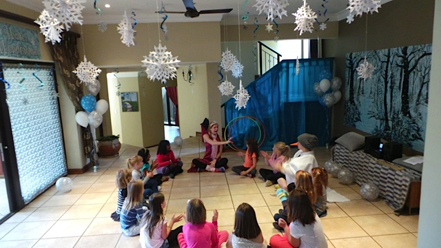
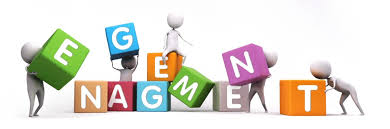
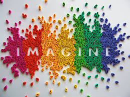
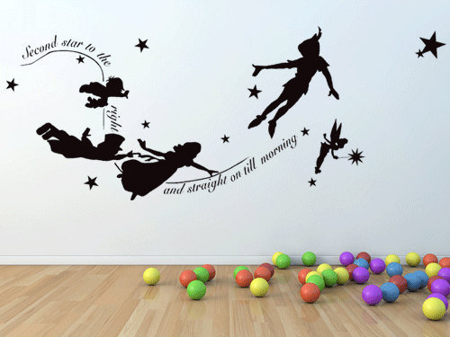

Buzz Blog
Think back to your own birthday parties as a child. Up to quite late in Primary School, you probably remember very little today. Try. Try very hard and then when you get a blurry memory into the faintest focus, try to zoom in. I am willing to bet that the majority of memorable moments from early childhood, are simple ones, filled with human connection and pure emotion. Especially at birthdays.
The below are 4 simple elements that, I believe, contribute to a sincerely happy children’s party and if implemented, can really help to keep costs down too. As so often in life, it is the very elements that cost the least, which add the most value.
Connect. Communicate with and observe your child to find out what theme or activity they really want at their party. Don’t compete with any one or anything out there. As long as you have answered to your child’s birthday dream, however basic or grand your approach, you will secure a memory that money can not buy.
Connect. Communicate your plans for the party back to your child. Manage expectations and bounce ideas off the guest of honour him- or herself. Just like a holiday, the journey is often a greater treat than the destination. Have fun with planning and prepping.
Connect on the day. Be present, have fun, try not to faff. It is highly unlikely that everything will go according to plan perfectly. Make sure you spend time just enjoying the moments and making new memories with your child, their friends and their parents.

Use what you have! Your own home, your own kitchen, your own creativity. Regardless of what you can afford, much from a once-off event will end up as waste. So go into the pantry, the dress-up box, the wardrobe, the study and get creative before you head for the shops.
I am passionate about having parties at home. My organization runs parties and events for children mainly between 4 and 9 years old and from considerable experience over many years, I believe children of this age can really benefit from having parties in their home.
It is their territory. Just as with adults, social engagements may cause anxiety for children and for these, their own homes are a comfort. Some children rarely get to be the center of attention and glow with the confidence that comes from being in their own environment. It is a wonderful experience for any child is to be king or queen of their own castle for a day.
Who cares about the mess that many (young) guests may cause or the big clean after? It’s worth it and it is cheaper than hiring a venue.

Having a special activity at a children’s birthday party is ideal. I would recommend it for any age. It gives the day focus and structure.
Whether you run an activity with the children yourself (and there are many ideas to occupy young birthday guests) or get a service in to help, make sure that you fully engage the children. Whatever you do, make them participants and not audience members.
The most valuable lesson that I have learned from many years of local and international experience in this space is that: children need to be engaged and not simply entertained. Get them INVOLVED. Their minds and their bodies. As long as they participate! A simulating and focused activity – not just climbing or jumping on an object, for even as short as 30 mins – which fully engages children, will be more memorable, less boring and more satisfying than three hours of being a spectator.
Birthday activities for this age range, where there is a performance-audience relationship between the child and the activity, may be expensive or fail to captivate a large group of young, excited, often sugar-hyper, children.

If you want to touch the heart of a child, do it the Peter Pan way… through their imaginations. Every electronic device, any video game, Ipad or console ever presented to any child, was first conceived of in someone’s imagination.
Theme the party. Create that world. Set the games and activities IN that world. Meet the characters from that world through a character entertainer, the decor, the cupcakes or whatever you can. It really is as simple as using music, costume bits and basic drama games to be transported anywhere. And the point it not to be an Andrew Lloyd-Webber production. Trust that the child’s mind will carry you past the couch and the coffee table and off to an imagination adventure.
Whether you hire someone or do it yourself, tap into the rich, freely available imagination and creativity of the kids present. It will bridge any limitation. Young children are ready to suspend disbelief. They want to play. It is universally true of every child. Believe me. Let them.
